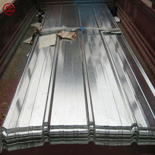

Jual Floor Deck Harga Murah di Lubuklinggau ☎ ??? (www.dis.or.id)
Atap adalah hal yang paling penting saat membangun sebuah bangunan. Dikarenakan banyak keunggulan yang mengalahkan kayu sebagai rangka konvensional. Keberadannya pun sudah menggeser kayu dan bahkan sewaktu-waktu dapat menggantinya. Atap seperti halnya namanya membutuhkan rangka dan atap utama sebagai bahan penutup sebuah bangunan. Pada kesempatan kali ini saya akan membahas beberapa jenis atap, seperti atap galvalum, atap lengkung, seng gelombang, plat seng & plat galvalum dan masih banyak lagi. Keberadaannya tidak kalah penting, dikarenakan fungsinya adalah menyangga. Apa yang terjadi? Tentu anda tahu, atap tersebut tidak akan bertahan lama dan bahkan bisa langsung roboh karena tidak adanya pondasi yang menyangganya.
Distributor & Supplier Floor Deck (Bondex)

Jika dibandingkan dengan triplek maupun bahan lain yang digunakan untuk membuat sebuah dek, ada beberapa kelebihan Floor Deck yang tidak dimiliki oleh beberapa bahan lain tersebut. Memasang Floordeck berarti memasang bekesting tetap pada areal yang luas dalam waktu singkat dan menghemat pemakaian perancah tiang penyangga. Produk material ini berfungsi untuk menggantikan fungsi bekisting pada saat melakukan pengecoran plat pada lantai. Floordeck atau bondek ini adalah material bangunan yang terbuat dari bahan baja galvanis dengan kekuatan tinggi yang mampu menahan beban struktur pelat yang ada pada lantai.
Kini anda bisa mendapatkan floor deck Lubuklinggau berkualitas dan bermutu tinggi dengan hanya mengunjungi situs dis.or.id. Disana anda bisa mendapatkan floor deck Lubuklinggau yang anda inginkan.
Info Pemesanan Selengkapnya
Google Maps: https://www.google.com/maps/d/u/0/viewer?mid=1vSGA7eD7ctB-ierGsro9yf6LdDAQHeLS&ll=-6.2537250295094555%2C106.82745&z=15
Note: https://www.facebook.com/notes/distributor-of-industrial-supply/kontraktor-jasa-floor-hardener/1783168878649658/
Event: https://www.facebook.com/events/534395173592364/
Portfolio Produk: https://www.facebook.com/1681607345472479/photos/?tab=album&album_id=1685055588460988
Distributor & Supplier Besi Beton

Bangunan apakah itu dalam wujud rumah atau toko harusnya menggunakan material yang kokoh dan kuat. Besi Beton mengandung banyak batang tulangan yang dapat memikul beban berat. Pendidikan sangat penting karena digunakan dalam berbagai bentuk struktur bangunan baik bangunan kecil maupun bangunan besar seperti jembatan, Bendungan, terowongan dan masih banyak lagi. Berikut fungsi dan kelebihan dari besi beton yaitu memiliki tekanan yang kuat dan lebih tinggi dibandingkan dengan bahan lainnya, tahan terhadap api dan air dan juga memiliki struktur terbaik pada bangunan jika banyak bersentuhan dengan air, memiliki struktur yang cukup kokoh, tidak memerlukan biaya pemeliharaan yang cukup tinggi, dapat dirakit dalam bentuk yang sangat beragam dan masih banyak lagi kelebihan yang bisa anda dapatkan dengan menggunakan Besi beton.
Jika anda saat ini sedang membutuhkan besi beton berkualitas tinggi.
Distributor & Supplier Steel Grating

Tetapi, jangan hanya memperhatikan harga karena Anda harus mempertimbangkan kualitasnya terlebih dahulu. Selain untuk keamanan, juga untuk aksesoris kolam renang. Grating ini bisa dirangkai plat strip besi baja dan besi ulir yang dilas pada permukaan silangnya sehingga akan membuat bangunan lebih kokoh dan kuat.
Anda bisa mendapatkan steel grating berkualitas dengan mengungjungi dis.or.id. Karena disana anda bisa mendapatkan steel grating yang berkualitas dan harga yang ditawarkan pun sangat terjangkau dan pastinya cocok untuk kantong anda. Memesan steel grating di dis.or.id pastinya anda tidak akan merasa rugi.
Distributor & Supplier Pipa (Hitam/Gas, Galvanis)

Kekuatan dari pipa hitam gas ini memang sangat kuat, tak heran bila untuk kebutuhan konstruksi bangunan yang berat material ini tidak pernah absen. Pipa hitam banyak sekali diaplikasikan pada area pertambangan minyak gas karena ia memiliki struktur yang 3 kali lebih kuat dari jenis pipa biasa. Kebanyakan orang memanfaatkan pipa hitam ini pada area pertambangan gas dan minyak, sebagian orang pun bahkan mengira bahwa nama asli dari pipa hitam memanglah pipa gas. Anda dapat mengkonsultasikan keperluan pipa hitam tersebut pada kami dan mengetahui informasi harganya lebih detail.
Distributor & Supplier Kawat Bronjong/Gabion

Kawat bronjong berfungsi sebagai pencegah erosi. Umumnya, kawat ini dipasang di tebing yang rawan sekali mengalami longsor, terutama ketika musim hujan tiba. Ini berbentuk seperti anyaman yang terbuat dari kawat biasa. Agar tidak berkarat sehingga bisa bertahan dalam kurun waktu yang lama, kawat ini dibuat dari bahan galvanis yang anti karat. Maka dari itu, kekuatannya untuk menahan tebing tinggi yang mungkin bisa longsor tidak perlu dipertanyakan lagi. Kawat bronjong biasa dilapis oleh galvanis yaitu suatu lapisan anti karat agar kawat dapat tahan lama dan tidak gampang berkarat. Kawat bronjong ini juga bisa berfungsi sebagai pengaut tebing miring di mana di atas tebing tersebut mungkin terdapat bangunan atau jalan.
Jika anda sedang mencari kawat bronjong, anda bisa datang dan mengunjungi situs dis.or.id. Sehhingga, anda bisa leluasa memilih kawat bronjong mana yang susuai dengan yang anda butuhkan.
Distributor & Supplier WF H-beam

Saat ini, jenis besi WF memang banyak dicari. Di samping itu, kepadatan yang tinggi juga dimiliki oleh besi jenis ini sehingga kualitasnya memang benar-benar terjamin. Besi WF memiliki daya tahan terhadap suatu bangunan.
Harga yang di patok juga sangat terjangakau, jadi anda tidak perlu mengeluarkan budget terlalu banyak. Disana anda bisa mendapatkan besi wf yang anda inginkan.
Distributor & Supplier Expanded Metal

Expanded metal atau yang dikenal juga dengan grid mesh ini adalah lembaran baja berbentuk jala dengan lubang-lubang yang homogen dan sangat cocok jika digunakan untuk berbagai aplikasi selain dari Pagar BRC. Dimana Expanded Metal ini dibuat dengan menggunakan baja berkadar karbon rendah tanpa di las, tanpa sambungan dan dikenal lebih kuat. Sedangkan untuk keunggulannya sendiri adalah memiliki bentuk yang indah dan juga homogen, lebih vareatif dalam hal pengaplikasiannya, relatif lebih ringan, dan lebih mudah dipasang. Selain itu, Expended Metal juga dikenal mampu menahan beban berat, memiliki permukaan yang anti slip/tidak licin, dan juga dikenal tahan karat untuk material yang dari alumunium.
Jika anda saat ini sedang mencari dan membutuhkan expanded metal, ada baiknya anda mengunjungi dis.or.id. Kunjungi dis.or.id untuk memesan expanded metal dengan harga yang murah serta mutu yang terjamin.
Distributor & Supplier Plat (Hitam, Kapal, Bordes, Strip)
.jpg)
Apabila anda saat ini sedang mencari tempat atau toko yang jual plat hitam , anda dapat menemukannya di toko besi terdekat. Pada umumnya disebut plate kapal dikarenakan biasa digunakan untuk bahan pembuatan badan kapal dan mempunyai standart spesifikasi material yang beragam untuk spesifikasi. Dis.or.id menjual plat besi yang anda butuhkan dengan harga yang murah. Karena dis.or.id adalah distributor pertama yang langsung mengambil barang dari pabrik.
Di dis.or.id, anda dapat mendapatkan nya dengan harga lebih miring dibandingkan dengan toko besi lain nya. Disana terdapat berbagai macam plat yang anda butuhkan dan pastinya dengan harga yang sangat terjangkau. Tak perlu lagi bingung mencari plat hitam yang murah dan berkualitas.
Distributor & Supplier Atap Galvalum

Seng galvalum adalah bahan seng dengan berbagai kelebihan yang memiliki komposisi tertentu. Atap galvalum mempunyai komposisi tertentu sehingga menyebabkan atap galvalum tersebut lebih kuat dan awet jika dibandingkan dengan bahan baja ringan lainnya.
Banyak sekali kelebihan yang dimiliki oleh atap galvalum ini. Patut anda ketahui, jenis baja yang saya maksud kali ini bukan baja berat seperti halnya alat berat, melainkan baja ringan, sehingga tidak akan membebani dinding rumah anda. Atap galvalum memang menjadi salah satu incaran atap saat ini dikarenakan galvalum dinilai banyak orang lebih efektif jika dibandingkan dengan galvanis.
Ada anggapan bahwa atap galvalum membuat suasana menjadi panas dan bersik. Namun, banyak anggapan yang mengatakan bahwa memasang galvalum akan membuat rumah akan terasa panas dan berisik. Ada pula tanggapan yang mengatakan bahwa atap galvalum itu panas dan juga berisik. Penggunaan galvalum terbilang lebih efektif bila dibandingkan dengan galvanis. Karena galvalum mempunyai daya tahan karat 4x dari galvanis. Tentunya ada sudah mengetahui bahwa galvalum tidak bisa dimakan rayap bukan? Oleh karena itulah bila dibandingkan dengan kayu, maka saya rekomendasikan atap galvalum kepada anda.
Distributor & Supplier Atap Lengkung

Dewasa ini, atap terbuat dari berbagai bahan yang sangat terkomposisi. Baik atap tersebut terbuat dari besi, aluminium, galvalum, zincalum kayu dsb. Atap haruslah mempunyai sifat kedap air sehingga air hujan tidak akan merembes kedalam bangunan tersebut.
Bila atap sudah bocor maka kualitas dari atap tersebut akan diragukan. Salah satunya juga harus kuat menahan derasnya air hujan.
Kekuatan dan keunggulannya kiat membuatnya semakin dicari orang. Ya, apalagi jika bukan atap lengkung. Bila anda ingin mengetahui harga dari setiap jenis atap lengkung maka anda cukup menghubungi kontak yang tertera pada website dis.or.id. dis.or.id adalah distributor terpercaya untuk anda.
Distributor & Supplier Truss Canal C

Sudah tahukah anda apa yang dimaksud dengan galvalum? Galvalum memang istilah yang kerap kali kita dengar dan umumnya memang sangat erat kaitannya dengan baja. Cara pemasangannya besi kanal c dengan reng galvalum juga tidak boleh sembarangan. Pilihan ini amatlah tepat mengingat bahwa besi ini sangat melengkapi kekurangan dalam pembangunan rumah minimalis tersebut. Bagi anda yang sedang mencari besi kanal C maka saya merekomendasikan anda untuk mengujungi dis.or.id. Segala sesuatu juka diukur sesuai dengan ilmunya maka akan menghasilkan karya yang bangus serta hemat biaya. Kunjungi website dis.or.id untuk info lebih lanjut dan hubungi kontak yang tersedia sesuai dengan kebutuhan anda.
Distributor & Supplier Hollow Galvalum

Hollow galvalum menjadi primadona bagi banyak orang dikarenakan uniknya komponen berikut ini. Kayu pun sudah digeser, dikarenakan keberadaan hollow galvalum ini. Namun dominasi bahan sebagian besar menggunakan alumunium dengan presetase rata rata 55%.
Bahan jenis ini memiliki banyak sekali kelebihan, selain tahan terhadap karat, hollow galvalum juga tahan terhadap serangan rayap dan juga memiliki beban yang cukup ringan. Kami akan mengirim barang pesanan anada sampai pada tujuan dengan aman, cepat dan tepat tujuan. Sehingga tidak heran bila hollow galvalum menjadi produk paling dicari oleh masyarakat dalam industri pembangunan. Kami menjual Hollow galvalum berkualitas, anti korosi, dan juga jaminan tahan lama. Namun sayangnya masih banyak pekerja bangunan yang masih terkendala dari segi pemasangan nya.
Distributor & Supplier Seng Gelombang

Seiring perkembangan jaman, seng gelombang mengalami peningkatan dari waktu ke waktu. Kali ini seng gelombang hadir dengan desain warna yang menarik-menarik. Andapun wajib memperhatikan bagaimana atap bagian bangunan tersebut apakah berkualitas ataukah tidak, atap dengan kualitas rendah akan beresiko kerusakan maupun kebocoran yang pasti merugikan seisi bangunan ruangan tersebut. Atap menjadi bagian penting sebuah bangunan yang harus diperhatikan. Ia lebih mudah di pasang dan harga jual yang ekonomis dipasaran membuat seng gelombang memiliki banyak peminat. Terkadang tak hanya jenis seng gelombang dengan ukuran besarlah yang dicari kebanyakan orang.
Dengan seng gelombang kecil, anda tak perlu lagi repot memotong ukuran asli seng gelombang dan menata seng gelombang dengan ukuran yang pas pada atap bangunan. Seng gelombang dengan warna ataupun transparan amatlah awet bila dibandingkan dengan bahan pembuat atap lainnya.
Distributor & Supplier Plat Seng

Seng atau Plat gavalum dapat dikatakan pembaruan dari seng biasa pada umumnya, karena jenis seng ini tidak panas, tidak bising, anti karat, tahan lama dan masih banyak kelebihan lainnya.
Dan apabila anda merasa kurang paham tentang ukuran yang mana yang sesuai dengan kebutuhan anda, anda dapat mengkonsultasikan nya dengan kami secara gratis. Namun apabila anda membutuhkan nya hanya sedikit, misal untuk penyambungan, atau ingin mengganti beberapa bagian talang rumah anda, anda dapat membeli yang per meter saja. Hal hal tersebut memang menjadi ciri khas dari seng biasa pada umumnya. Harga plat galvanis lembaran tentu nya akan lebih mahal jika dibandingkan yang per meter.
Lalu berapa harga plat galvanis 2018? Bila anda sedang mencari harga terbaru hari ini juga, anda dapat menghubungi kami karena kami menjual plat galvanis, galvalum dengan berbagai ketebalan dan ukuran.
Distributor & Supplier Genteng Metal

Kami adalah distributor genteng metal, tersedia berbagai ukuran dan varian genteng metal. Berbicara tentang genteng metal memang akan identik dengan perbandingan metal vs keramik. Salah satu dari kelebihan genteng metal adalah lebih membuat rumah anda bersih, rapi, lebih anti bocor, dan juga lebih ringan. Anda cukup menghubungi contact person yang sudah tertera di setiap industri yang anda butuhkan. Apakah anda sedang mencari genteng metal berkualitas? Maka anda berada di tempat yang tepat, silakan kunjungi dis.or.id dan dapatkan info menarik khusus untuk anda yang ingin segera mengetahui keunggulan genteng metal ini.
Distributor & Supplier Besi Wiremesh

Wiremesh merupakan besi lonjor panjang yang disusun seperti anyaman sehingga membentuk lembaran. Besi wiremesh sering di anggap banyak orang adalah besi anyam karena strukturnya yang mirip dengan anyaman. Bentuk anyaman dari besi wiremesh sendiri bermacam-macam, ada yang membentuk kotak-kotak ada juga yang jajar genjang, anda dapat memilih sesuai kebutuhan. Untuk kepentingan konstruksi, besi wiremesh diaplikasikan untuk keperluan anak tangga, plat lantai, dan penguat dak beton. Setiap struktur dari besi wiremesh ini telah didesain khusus untuk berbagai kebutuhan, anda bisa memanfaatkannya sesuai dengan kekuatan dan jenis strukturnya. Untuk bangunan bertingkat besi wiremesh yang digunakan adalah ukuran 8 sampai 10. Dibanding jenis besi lain, kekuatan besi wiremesh lah yang terbaik, sebab ia diproduksi dengan sistem las otomatis. Jika anda saat ini membutuhkan besi wiremesh dengan kualitas terbaik, segera kunjungi dis.or.id.
Distributor & Supplier Pagar BRC

Pagar brc di produksi dengan material besi yang memiliki ketebalan berbeda-beda, ada yang 5mm – 8mm. Potongan besi tersebut kemudian digabungkan dengan bantuan mesin las wiremesh. Kekuatan pagar BRC sebagai pagar pelindung sangat bisa diandalkan, karena ia diproduksi dengan tegangan ijin 2900 kg/cm2 sehingga kekuatannya mencapai 2,5 kali lipat dari jenis biasa. Lapisan galvanis yang terdapat pada pagar BRC menjadikannya tahan akan korosi maupun karat, tak heran bila umur pengaplikasian dari pagar BRC bisa mencapai 10 tahun.Dan juga pagar BRC memiliki lapisan galvanis sehingga ia daya tahan terhadap karat > 10 tahun sehingga sangat cocok diaplikasikan pada idaerah yang korosif seperti tepi pantai, daerah belerang, atau dekat pabrik. Disini kami siap menerima pesanan pembuatan pagar BRC untuk anda yang membutuhkan.
Distributor & Supplier Kawat Loket, Kawat Harmonika

Kawat loket harmonika sering sekali diaplikasikan pada kebutuhan kawat pagar dan penutup jendela, hal ini tentu tidak tidak lain karena struktur bentuk dari kawat loket harmonika sendiri mirip seperti anyaman yang kuat. Kawat loket harmonika juga tahan karat, maka tak mengejutkan bila ia tahan dalam waktu yang lama. Apalagi bila jenis kawat harmonika yang digunakan adalah galvanis yang terkenal tahan karat maupun korosi sehingga sangat awet. Untuk informasi lebih lanjut, anda dapat menghubungi kami! Ukuran lebar maksimal yang kami terima adalah 3 meter. kami dapat memenuhi kebutuhan kawat loket harmonika anda dengan beragam ukuran, maksimal ukuran yang diterima adalah 3 meter.
Distributor & Supplier CNP & UNP

Besi UNP / besi kanal merupakan besi yang memiliki bentuk lengkung seperti huruf U yang banyak diaplikasikan untuk sambungan maupun dudukan atap. Besi UNP juga cocok diaplikasikan untuk kebutuhan girts / penutup dinding. Sedangkan untuk besi CNP sendiri lebih banyak digunakan pada dinding cladding atau gording. Bagi anda yang berminat menggunakan besi CNP tentu sangat bersyukur, karena besi ini sangat fleksibel dan ia bisa dimodifikasi dari plat koil dengan teknik cutting.
Distributor & Supplier Besi Siku

Dalam dunia konstruksi, salah satu material yang cukup penting dan tidak boleh dilupakan adalah besi siku. Besi siku menjadi salah satu material yang dapat diandalkan sebagai besi penyangga. Pada umumnya besi siku yang banyak digunakan dalam kehidupan sehari-hari adalah besi siku sama sisi, dimana ia membentuk dua garis tegak lurus yang membentuk 90 derajat. Untuk panjangnya, kebanyak besi siku dibuat dengan ukuran maksimal 6 meter dengan ketebalan dan panjang sisi sesuai kebutuhan. Besi siku dapat anda manfaatkan untuk beragam kebutuhan konstruksi, bangunan, furnitur, dan lainnya. Kunjungi website kami di www.dis.or.id atau menghubungi kontak yang tersedia.
Distributor & Supplier Hollow (Hitam, Galvanil, Galvanis)

Besi hollow banyak sekali dimanfaatkan untuk kebutuhan proyek bangunan karena kualitasnya yang lebih kuat dibanding kayu. Apalagi jika mengingat menggunakan besi hollow akan membuat pengerjaan konstruksi selesai lebih cepat. Tentu saja hal ini karena kelebihan yang ditawarkan oleh besi hollow sendiri tidak dimiliki kayu, material yang kokoh, pengerjaan cepat, dan tidak mudah rapuh. Tentu saja hal ini dikarenakan kekuatan yang dimiliki hollow galvanis tidak bisa dibandingkan dengan kayu, material ini juga lebih mempercepat pembangunan konstruksi. Besi hollow memiliki kekuatan yang lebih kokoh dan dapat mempercepat pekerjaan konstruksi karena strukturnya yang mudah diatur. Dis.or.id pun telah menyediakan produk besi hollow hitam galvanis ini untuk dapat anda pesan langsung! Tersedia ukuran besi hollow 40 x 40 x 2 mm x 6 Meter, 50 x 50 x 3 mm x 6 Meter hingga ukuran 150 x 150 x 5 mm x 6 meter dan masih banyak lagi. Terdapat besi hollow dengan berbagai ukuran yang bisa anda pesan langsung, misalnya: ukuran besi hollow 40 x 40 x 2 mm x 6 Meter, 50 x 50 x 3 mm x 6 meter hingga ukuran 150 x 150 x 5 mm x 6 meter.Segera hubungi kontak kami untuk info lebih lanjut. anda dapat memesan besi hollow hitam galvanil galvanis tersebut dengan berbagai ukuran, baik ukuran besi hollow 40 x 40 x 2 mm x 6 Meter, 50 x 50 x 3 mm x 6 meter sampai dengan ukuran 150 x 150 x 5 mm x 6 meter. Kami menyediakan besi hollow hitam dengan ukuran 40, 50, 150 dan lain sebagainya dengan panjang rata-rata 6 meter. Untuk anda yang membutuhkan besi ini, kami menyediakan ukuran besi hollow yang variatif 40 x 40 x 2 mm x 6 Meter, 50 x 50 x 3 mm x 6 meterr sampai dengan ukuran 150 x 150 x 5 mm x 6 meter. Jika anda membutuhkan besi hollow maka sebelum memesan pada kami anda harus melakukan perhitungan kebutuhan dahulu, seperti berapa panjang dan ketebalan yang diperlukan. Untuk itu hubungi kontak kami segera!
Distributor & Supplier Pipa Pancang

Untuk yang di bahas pertama adalah pipa pancang. Terutama bagi proyek berjalan yang sedang melakukan pembangunan di atas permukaan laut. Pipa pancang ini sendiri memiliki beragam ukuran sehingga akan memudahkan bagi Anda untuk menyesuaikan nya dengan kebutuhan. Hal ini bertujuan untuk memudahkan penyesuaian. Di sini Anda aka mendapatkan pipa dengan kualitas terbaik dan mutu terjamin. sedangkan untuk kualitas yang Anda dapatkan, jangan khawatir karena bisa di jamin mutunya tinggi. Di sini Anda akan mendapatkan pipa pancang berkualitas yang siap di gunakan. Bukan hanya kualitas bahannya saja yang bagus tetapi juga untuk pembuatannya. Dengan begini, maka dalam penggunannya, pipa pancang juga bisa di aplikasikan secara maksimal.
Jasa Pondasi Bor (Strouss/Borepile)

Kalau menyebut pondasi bor, tentu saja tidak asing lagi jika dalam setiap pembangunan akan di butuhkan hasil maksimal termasuk dalam hal ini. terkait dengan hal itu, Anda bisa menggunakan jasa pondasi bor sebagai jalan keluar sehingga pada proyek akan menghasilkan pengeboran yang sempurna. Selanjutnya, untuk masalah di mana jasa ini bisa di temukan, maka Anda bisa memesannya di sini dengan mudah. untuk kualitasnya pun tidak perlu di pertanyakan lagi karena dengan jasa profesional yang lebih berpengalaman ini, pengeboran akan semakin terjamin. Pelakunya pun merupakan orang-orang terlatih yang sadah profesional dan lebih berpengalaman. Jika mengenal pengeboran lebih jauh, sebenarnya ada dua jenis yakni manual dan otomatis dengan penggunaan mesin. Untuk masalah kualitas hasilnya pun sama saja jadi tidak perlu khawatir. Mesin seperti ini pun telah banyak di temukan di pasaran.
Distributor & Supplier Genset (New/Second)

Sebagai penghasil tenagan listrik kini genset sudah banyak di kenal dan di aplikasikan. genset ini merupaka produk yang menggunakan bahan bakar solar sehingga bisa menghasilkan tenaga listrik. Nah, untuk pembelian keduanya, bisa Anda dapatkan pula di DIS.
Selanjutnya, untuk masalah harga, memang terbilang cukup mahal. sedangkan dari segi merk, genset sendiri juga cukup variatif.
Distributor & Supplier UPS

UPS saat ini sebenarnya telah banyak di gunakan. UPS ini merupakan salah satu alat elektro yang mampu menyimpan energi listrik sehingga bisa di fungsi kan ketika sumber utama terputus. Terutama bagi para pengguna komputer yang tergantung terhadap enegi listrik. Sedangkan dari jenisnya sendiri, UPS memang sangatlah bervariasi. oleh sebab itu, jika memang ingin membeli UPS, silahkan Anda menyesuaikan dengan bagaimana kebutuhan Anda. Sedangkan untuk pembeliannya, Anda bisa mendapatkan barang di DIS. Untuk tingkat ketahanan nya pun juga cukup tinggi sehingga bisa lebih menguntungkan.
Distributor & Supplier Forklift (Second)

Kini forklif memang cukup banyak di gunakan baik dalam industri kecil, menengah maupun besar. Oleh karena itu, banyak penjualannya di mana-mana. Termasuk jika ingin yang bekasnya pun di sini ada. sedangkan dari sisi kualitas barang yang di tawarkan di sini, jangan khawatir karena tentu saja akan sangat memuaskan. Nah, mengingat kualitasnya yang terjamin, maka akan semakin memudahkan berbagi aktifitas industri pengguna nya. Apalagi, di sini yang di tawarkan adalah forklif yang siap pakai. Selanjutnya, jika forklif sudah tidak di gunakan, Anda pun bisa kembali menjualnya pada setiap distributor forklif sehingga tidak akan rugi membelinya.
Jasa Pembuatan Moulding Inject

Jika Anda sedang ingin membuat kemasan plastik, maka Anda tidak perlu khawatir karena saat ini telah banyak tersedia jasa yang bisa membantu Anda. bahkan kalau berbicara kualitas hasilnya di sini, bisa di pastikan akan sangat bermutu. sedangkan untuk masalah kuantitas moulding inject nya, jangan khawatir karena tanpa batasan cetak, berapa pun keinginan Anda, pasti akan di layani. Bahkan ketika Anda bingung ide, ada banyak pilihan yang bisa di gunakan dan di sesuaikan dengan kebutuhan. Apalagi jika Anda kebingungan masalah ide, jangan khawatir karena banyak pilihan yang bisa di jadikan inspirasi. Tinggal menyesuaikan saja dengan bagaimana kebutuhan untuk produknya sehingga pencetakan yang di lakukan bisa menghasilkan bentuk yang tepat.
Jasa Pembuatan Sparepart Mesin Produksi / Alat Berat

Di dunia mesin, tentu saja mendengan kata sparepart atau alat berat sudah tidak asing lagi. salah satunya seperti yang di tawarkan di DIS. Perlu di ketahui pula bahwa dalam pembuatan ini memang tidak bisa sembarangan. Oleh karena itulah di butuhkan hasil berkualitas sehingga bisa bekerja secara maksimal. Hal inilah yang membuatnya harus di produksi oleh jasa terpercaya sehingga akan semakin aman.
Jasa Service Elektronik (Kompor Gas, Dispenser, Mesin Cuci)

Dengan zaman yang semakin hari semakin maju, tentu saja alat elektro yang banyak di gunakan di masyarakat sudah semakin banyak. oleh karena itulah di DIS sendiri juga menyediakan jasa service elektornik seperti kompor gas, dispenser dan mesin cuci. sedangkan beberapa jasa ini melayani service seperti kompor gas, dispenser maupun mesin cuci. Sedangkan service elektronik ini sendiri, sebenarnya tidak harus saat barang Anda rusak saja.
Sudahkah anda mengetahui arti penting dari sebuah komponen bernama atap? Keberadannya amat penting bukan? Bahkan bisa disebut kebutuhan primer setiap bangunan. Dari yang modern sampai konvensional atap selalu ada di setiap bangunan. Memang, ada beberapa bangunan mewah yang sudah memakai beton sebagai atapnya. Kebutuhan primer seperti atap, memang tidak dapat diragukan lagi fungsinya. Sudahkah anda mengerti akan manfaat atap yang sudah pasti kita butuhkan? Silakan kunjungi dis.or.id untuk informasi lebih lanjut dan dapatkan penawaran yang sesuai dengan kebutuhan anda. Karena sebuah rumah tidak dapat disebut rumah tanpa atap diatasnya. Maka, dengan senang hati kami akan membantu anda.